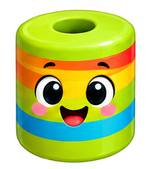
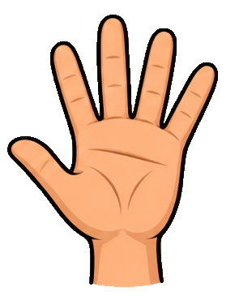

سلام! من فیلی هستم؛ دوست کوچولوی تو در دنیای ریاضی!
با فیلی، ریاضی شیرین میشه!
بیا با هم وارد دنیای شگفتانگیز ریاضی بشیم! با انیمیشنهای جذاب، بازیهای سرگرمکننده و تمرینهای تعاملی، ریاضی رو راحتتر و شیرینتر یاد بگیر!

بیا با هم وارد دنیای شگفتانگیز ریاضی بشیم! با انیمیشنهای جذاب، بازیهای سرگرمکننده و تمرینهای تعاملی، ریاضی رو راحتتر و شیرینتر یاد بگیر!
همهچیز برای اینکه ریاضی یک بازی شیرین باشد.
درسها را با تصویر و حرکت ببین و راحتتر بفهم.

با مهرهها، انگشتها و تصویرها بشمار و کشف کن.
هر بار تمرینهای تازه و متفاوت؛ تا گواهی قهرمانی!

هر وقت و هر جا که دلت خواست، با گوشی یا رایانه.
در هر فصل یک ماجراجویی تازه منتظر توست. فصل اول و دوم رایگان هستند و میتوانی بقیه فصلها را هم با خرید دسترسی باز کنی.
بدون ثبتنام و بدون پرداخت، همین الان شروع کن.
🌈 ورود به فصلهای رایگانبا معرفی مجموعه ریاضی با فیلی به دوستانت، از خریدهای آنها پورسانت دریافت کن.
🎁 آشنایی با همکاری در فروشبرای دانشآموزان کلاس دوم دبستان؛ هشت فصل کتاب ریاضی دوم بهصورت انیمیشن و تمرین تعاملی.
فصل ۱ (عدد و شمارش) و فصل ۲ (جمع و تفریق) رایگان و باز هستند.
این فصلها قفل هستند و با خرید باز میشوند. پرداخت آنلاین هنوز فعال نشده و در مرحلهٔ بعدی سایت اضافه میشود.
نه؛ هر بار که وارد درس میشوی، تمرینهای تازه و متفاوتی ساخته میشود.
نه؛ فقط موسیقی پسزمینه و افکتهای صوتی دارد و هر دوی آنها قابل خاموشکردن است.